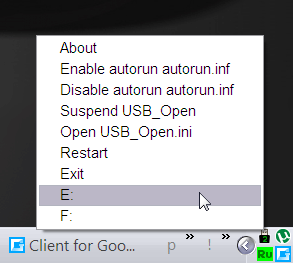

USB_Open
Назначение
Меню иконки в трее для открытия подключаемых дисков.

USB_Open - утилитка для открытия флешки в файловом менеджере при выключенном автозапуске autorun.inf. Можно использовать в режиме монитора и разовый запуск с ключам /l, при котором обрабатывается секция исключения в USB.ini. Секция Set используется в режиме ожидания в трее. При подключении флешки срабатывает свой авторан (любой файл), открывается файловый менеджер (указанный). Если не требуется, то оставить параметры пустыми. При извлечении флешки можно выполнить завершение процессов, можно использовать например для PStart.exe, который предварительно был запущен при вставке флешки в авторане.
Иконка в трее показывает количество подключенных флешек и сигнализирует вставку / извлечение. Также при вставке флешек в меню иконки трея добавляются пункты для открытия флешки. Некоторые параметры, например авторан могут содержать несколько файлов/путей перечисляемых через символ ";".
Учитывайте, что при ручной правке USB_Open.ini требуется перезапустить утилиту, чтоб изменения вступили в силу.